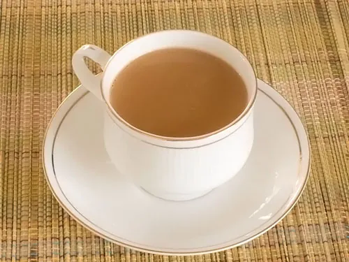

Warm, comforting milk tea.

Every step is ticked off. Want to cook it again?
Drinks
The simplest recipe on the site.
1 ingredient2 steps
Cool, refreshing lemonade with fresh mint.
5 ingredients2 steps
A thick, creamy mango smoothie.
4 ingredients2 steps